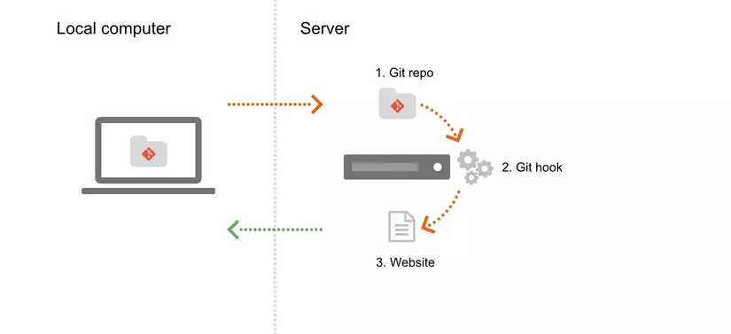

Tôi đã deploy website đầu tiên của mình như thế nào

Hoàn thành một website không phải là dấu chấm hết. Đó chỉ là phần đầu. Phần tiếp theo – và cũng là phần khiến mình hồi hộp nhất – chính là đưa nó lên Internet để người khác có thể nhìn thấy.
🚧 1. Localhost không phải Internet
Ban đầu, mình chỉ quen chạy web bằng:
http://localhost:3000
Mọi thứ ổn, cho đến khi có người hỏi:
“Gửi link web xem với?”
Và mình nhận ra... mình đâu có link để gửi đâu 😅
🔍 2. Tìm nơi “để website sống”
Mình bắt đầu tìm hiểu và biết được:
- 🌍 Domain — địa chỉ website
- 📦 Hosting — nơi đặt code
Với người mới, chọn dịch vụ dễ dùng là quan trọng. Và mình chọn: Vercel (cũng thử thêm Netlify sau này).
⚡ 3. Đẩy code lên GitHub
Để Vercel hoạt động, project cần được đưa lên GitHub. Vậy là mình học cách:
git add . && git commit -m "deploy" && git push
🚀 4. Nhấn nút Deploy
- Đăng nhập Vercel
- Chọn “New Project”
- Kết nối repo GitHub
- Bấm Deploy
Và... mình chờ khoảng 15 giây.
Nó chạy rồi.
🎉 5. Cảm giác lần đầu chia link
Mình gửi link cho bạn mình. Nó mở lên và bảo:
“Ê chạy thiệt kìa 😆”
Chỉ một câu thôi, nhưng đủ để mình hiểu: tất cả những giờ debug kia đều xứng đáng.
💬 Lời kết
Deploy không khó như mình từng tưởng. Nó chỉ khó khi bạn chưa thử.
Một ngày nào đó, bạn sẽ tự nói:
“Nó lên mạng rồi! Trời ơi đẹp quá!”